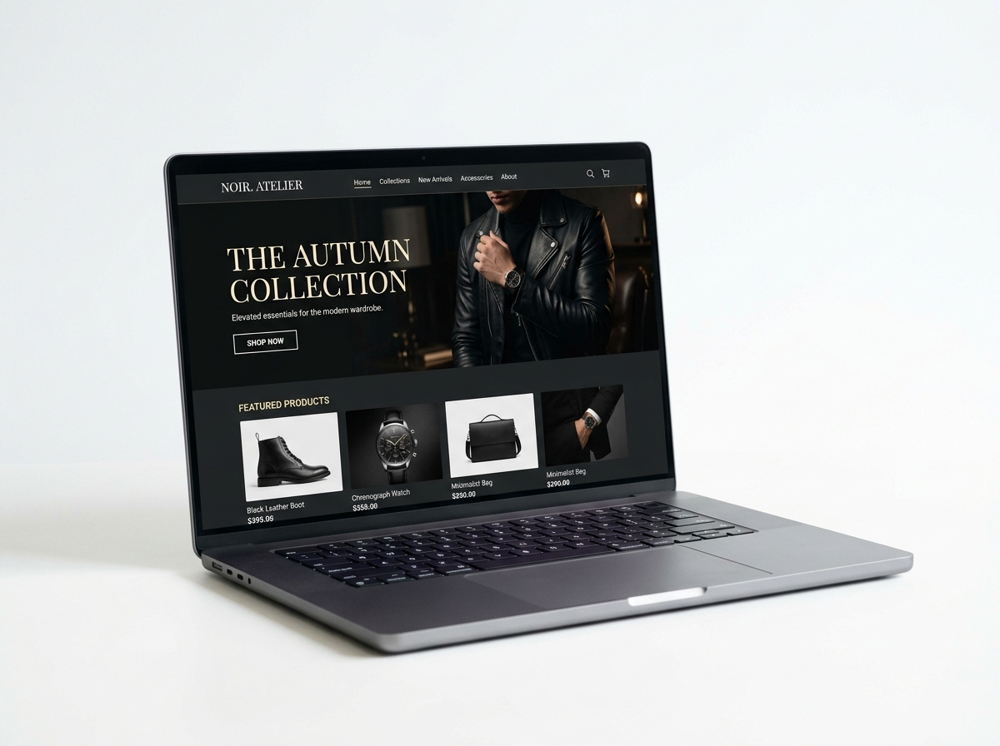
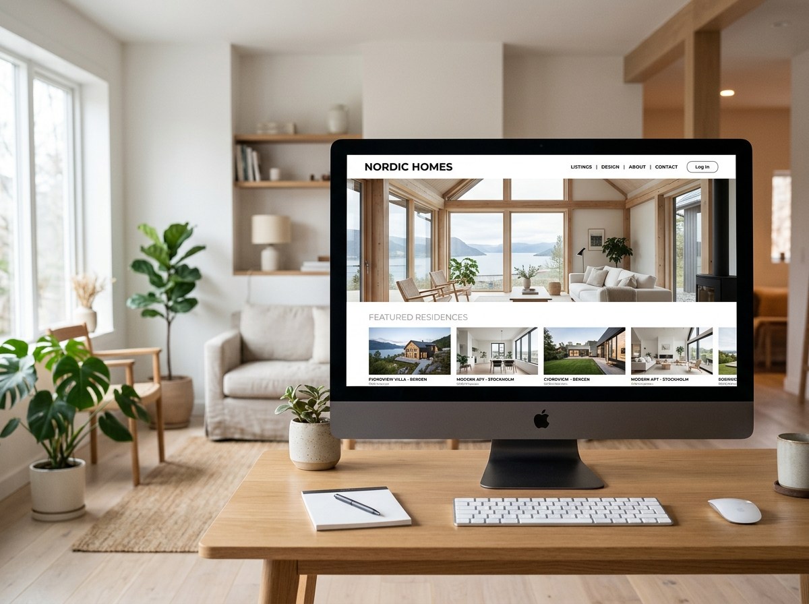

NordCommerce — Organic Growth Overhaul
How we turned a stagnant Scandinavian e-commerce brand into a traffic-generating machine in just 8 months.

Overview
NordCommerce is a Stockholm-based e-commerce retailer specialising in Scandinavian home goods. Despite having a strong product range and a loyal customer base, their organic search visibility had flatlined for two years.
They came to us with a clear mandate: unlock organic growth without relying on paid advertising. Our task was to diagnose the root causes and implement a scalable long-term SEO strategy.
The Challenge
After an initial audit, we identified three core problems. First, the site had severe technical SEO issues — duplicate content from faceted navigation generating thousands of thin, indexable URLs. Second, the site architecture buried key category pages, making them difficult for search engines to discover and prioritise. Third, the content strategy was entirely reactive — no keyword framework, no topical authority, no internal linking structure.
Our Approach
We began with a comprehensive technical audit using Screaming Frog and Google Search Console. Within the first 30 days, we resolved the faceted navigation issues via canonicalisation, implemented a crawl budget optimisation strategy, and fixed 1,400+ broken internal links.
We then rebuilt the information architecture from the ground up — flattening category hierarchies, consolidating thin pages, and creating a clear hub-and-spoke content model. Each category page was rewritten with search intent at its core, targeting high-commercial, high-volume keyword clusters.
In months three through eight, we executed a targeted content production programme — publishing 40 optimised blog posts and buyer guides — establishing NordCommerce as a topical authority in Scandinavian home furnishings.
Results
The results exceeded all initial projections. By month eight, NordCommerce was ranking #1 for 12 of their primary commercial keywords. Organic traffic had grown by 320%, driving a 180% increase in qualified leads. The site now generates more revenue from organic search than from all paid channels combined.
